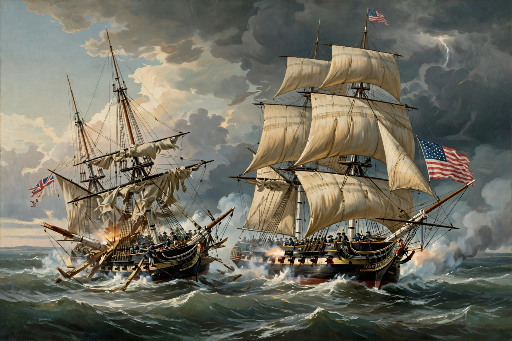

The War of 1812 (18 June 1812 – 17 February 1815) was fought by the United States and its allies against the United Kingdom of Great Britain and Ireland and its allies. It began when the United States declared war in June 1812. Although peace terms were agreed in the Treaty of Ghent signed in December 1814, the war did not officially end until the peace treaty was ratified by the United States Congress on 17 February 1815.
The conflict is often seen as a sideshow of the Napoleonic Wars, in which Britain was fighting France. The immediate causes of the American declaration included British trade restrictions brought about by the war with France, the forced recruitment of American merchant sailors into the Royal Navy (impressment), British military support for Native American tribes in the Northwest Territory, and American expansionist ambitions in Canada. The war was fought chiefly on the frontier with British North America, along the Great Lakes and the St Lawrence River, in the Chesapeake region, on the Gulf Coast, and at sea.
Neither side achieved its main war aims. The Treaty of Ghent restored relations between the two nations to status quo ante bellum — the state that had existed before the war — and no territory changed hands. In the United States the war's end, crowned by the victory at the Battle of New Orleans in January 1815, produced a strong surge of national confidence, sometimes called the "Era of Good Feelings", and launched the political career of Andrew Jackson. In Canada the successful defence against American invasion became a founding narrative, while the Native nations allied with Britain, above all Tecumseh's confederacy, lost their bid for an independent buffer state and never recovered their position.
| War of 1812 | |
|---|---|
 | |
| Date | 18 June 1812 – 17 February 1815 (2 years, 7 months, 30 days) |
| Location | Eastern and Central North America, Atlantic and Pacific Oceans |
| Result | Treaty of Ghent — status quo ante bellum |
| Belligerents | United States and Native allies (incl. Choctaw, Cherokee) — versus — British Empire (United Kingdom, Province of Canada), Tecumseh's confederacy, Spain (Pensacola, 1814) |
| Commanders | James Madison, Henry Dearborn, William Henry Harrison, Andrew Jackson, Oliver Hazard Perry — versus — Lord Liverpool, Sir George Prévost, Isaac Brock, Tecumseh, Roger Hale Sheaffe |
| Casualties | US deaths roughly 2,200 killed in action and about 15,000 total from all causes; British and allied deaths roughly comparable, including heavy Native losses (figures vary by source) |
The United States had long been caught between the belligerents of the Napoleonic Wars. Britain's Orders in Council blockaded French-controlled Europe and authorised the seizure of neutral ships trading with it, while Napoleon's Continental System answered in kind. American merchants were seized by both sides, but British practice rankled most: the Royal Navy, chronically short of sailors, stopped American vessels and impressed thousands of seamen it claimed as British subjects. The 1807 Chesapeake–Leopard affair, in which HMS Leopard fired on the American frigate Chesapeake off Virginia and removed four men, brought the two countries close to war.
President Thomas Jefferson answered with the Embargo Act of 1807, which devastated American trade without changing British policy. On the frontier, settlers blamed Britain for arming the Native confederacy led by the Shawnee brothers Tecumseh and Tenskwatawa, whose resistance to American expansion was checked by William Henry Harrison at the Battle of Tippecanoe in November 1811. "War Hawks" in Congress, among them Henry Clay and John C. Calhoun, pressed for war both to vindicate American honour and to annex Canada. On 18 June 1812 President James Madison signed the declaration of war — the closest congressional vote for war in American history.
American strategy rested on conquering Canada while Britain was preoccupied with Napoleon. Instead, the opening campaigns were disasters: General William Hull surrendered Detroit to Isaac Brock in August 1812, and attacks across the Niagara and toward Montreal were repulsed. At sea, however, American frigates won a string of single-ship victories — most famously USS Constitution over HMS Guerriere — that stunned the British public and earned the American ship her nickname "Old Ironsides".
In September 1813 Captain Oliver Hazard Perry destroyed the British squadron at the Battle of Lake Erie, reporting "We have met the enemy and they are ours." Control of the lake forced the British to abandon Detroit, and Harrison defeated them and their Native allies at the Battle of the Thames in October, where Tecumseh was killed and his confederacy fell apart. Fighting along the Niagara and St Lawrence frontiers, including the American sack of York (modern Toronto) and the battles of Chippawa and Lundy's Lane in 1814, remained bloody and inconclusive.
Napoleon's abdication freed British veterans for America. In August 1814 a British expedition defeated American militia at Bladensburg and carried out the burning of Washington, setting fire to the Capitol, the White House and other public buildings — in part, the British said, in retaliation for the burning of York. The same force then attacked Baltimore but was repelled at Fort McHenry in September; the bombardment inspired Francis Scott Key to write "The Star-Spangled Banner". On Lake Champlain, the American naval victory at Plattsburgh in September 1814 ended the last major British invasion and strengthened the American hand at the peace talks.
British and American negotiators at Ghent, in modern Belgium, signed a peace treaty on 24 December 1814, restoring pre-war boundaries and providing for boundary commissions. News crossed the Atlantic slowly, and on 8 January 1815 a British army under Sir Edward Pakenham assaulted Andrew Jackson's defences below New Orleans and was crushed with heavy loss, including Pakenham himself. The battle made Jackson a national hero. The Senate ratified the treaty unanimously, and Madison proclaimed peace on 17 February 1815.
The war settled remarkably little on paper: impressment was never mentioned in the treaty, and no borders moved. Yet its effects were large. The United States emerged with its independence confirmed in the eyes of the world and its politics reshaped — the Federalist Party, tainted by the secession talk of the Hartford Convention, collapsed, and a generation of leaders (Jackson, Harrison, John Quincy Adams) carried the war's prestige into national office. Arms manufacturing and economic nationalism grew under the lesson of wartime shortages.
For British North America, repelling the invasions became a central element of Canadian national identity. The war's clearest losers were the Native peoples east of the Mississippi: without British support they could not resist American settlement, and the Creek War of 1813–14, fought alongside the wider conflict, ended with the loss of vast Creek lands in the south. The Rush–Bagot Agreement of 1817 and the Convention of 1818 went on to demilitarise the Great Lakes and fix much of the US–Canadian boundary, beginning the long undefended border.